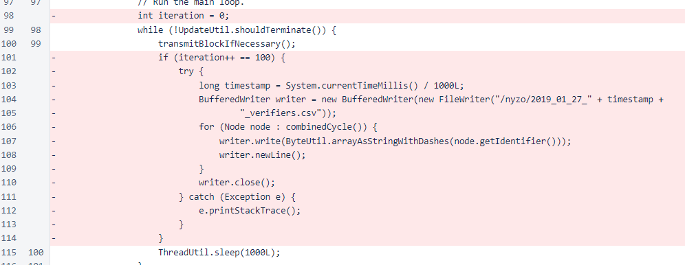

Nyzo version 491 (commit on GitHub) removes a small block of debugging code.
This version affects neither the sentinel nor verifier in a significant way. It removes a small block of debugging code in the sentinel.
In version 490, a small block of debugging code was inadvertently included. This block of code wrote the combined mesh to a CSV file on the 100th iteration of the block-transmit loop. It did not cause any significant issues, but it was unnecessary clutter. The block of code has been removed in this version.
